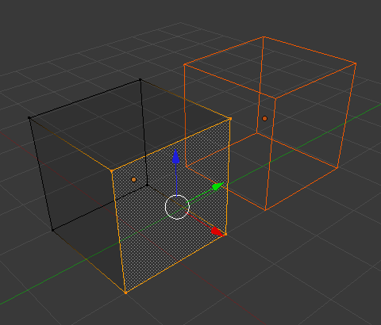

简介¶
网格建模通常从一个 基础网格 形状(如圆、立方体、圆柱......)开头。之后，你可以开始编辑，借此创建一个更大、更复杂的形状。
建模模式¶
3D视图有三种主要模式，用于用于创建、编辑和操作网格模型。三种模式都有各种各样的工具。一些工具可以在一个或多个模式下使用。
用于建模的模式有：
- 物体模式
- 编辑模式
- 雕刻模式
通常在 物体模式 添加网格物体，创建网格基本体。受限制的编辑类型例如大小、 位置和方位可以在 物体模式 下完成。物体模式 下还可以对多组网格进行合并和群组。
更多网格模型形状的细节是在 编辑模式 和 雕刻模式 下编辑完成的。这三种模式的性质决定了在3D视图面板中可供使用的工具。在建模时进行模式切换是很常见的。有些工具可以在多个模式中可用，而另一些则只能在特定模式下使用。
用户可以在两种模式下处理几何物体。

编辑模式¶
编辑模式 下的操作只影响物体的几何形状，但不影响全局属性，如位置或旋转。
只能对正在编辑的网格对象进行修改。若要修改其他物体，先退出编辑模式，选中对应物体，并重新进入编辑模式。
3D视图下的 编辑模式 标题栏如下:

编辑模式标题栏。
3D视图标题栏中的工具和模式(从左到右)：
- 视图，选择，和网格菜单
- Blender的交互模式
- 3D视图中物体着色类型
- 轴心点
- 3D变换操纵件
- 选取模式
- 仅选择可见的元素
- 衰减编辑模式
- 吸附
- OpenGL渲染
可以用 Tab 在物体模式和编辑模式之间切换。通过在3D视图标题栏的菜单里选择所需 模式 ， 切换至任意模式。
可视化¶

进入编辑模式前选中两个立方体。 |
{kind=link}
{kind=link}
默认情况下，在 物体模式 和 编辑模式 中，Blender对被选中的几何体使用橙色高亮显示.
在 物体模式 使用 Z 开启 线框 着色。物体没有被选中的时候显示为黑色，选中后则变为橙色。如果被选中物体超过一个，除了活动对象(通常是最后一个被选中的物体)之外的所有被选中物体，会显示为更深的橙色。
类似地，在 编辑模式 下，未被选中的几何体绘制为黑色，而被选中的面，边，或者顶点绘制为橙色。活动面用白色高亮显示。在 点选择模式 下，如果一条边上的两个顶点都被选中，这条边也会被高亮显示。同样的，如果被选中的顶点或者边足以定义一个面，那么这个面也会被高亮显示。
如果多个物体在进入 编辑模式 之前被选中， 所有被选中的物体将保持橙色高亮显示，指示其为活动选中集合的一部分。
工具栏¶

编辑模式下的工具栏。
使用 T 打开/关闭 网格工具 面板 。当进入 编辑模式，会出现一些网格编辑工具。
其中的大多数工具，都可以使用快捷键(在每个工具的 工具提示 中显示) ，和/或使用 专用项 菜单︰ W, 边 菜单 Ctrl-E，和 面 菜单 Ctrl-F 访问。每个工具的操作属性在 工具架 底部的操作面板中显示。
可以在 中启用更多的网格编辑工具。
属性区块¶

编辑模式下的属性区块。
使用 N 打开/关闭 属性区块。
在 属性区块 中，与网格编辑直接相关的面板是 变换 面板，可以输入数值。在 网格显示 面板，可以开启显示如法线、距离，角度与面积的数值。
在 属性编辑器 的 对象 和 对象数据 选项卡下，还有有一些其他的工具，包括显示选项和 顶点组。